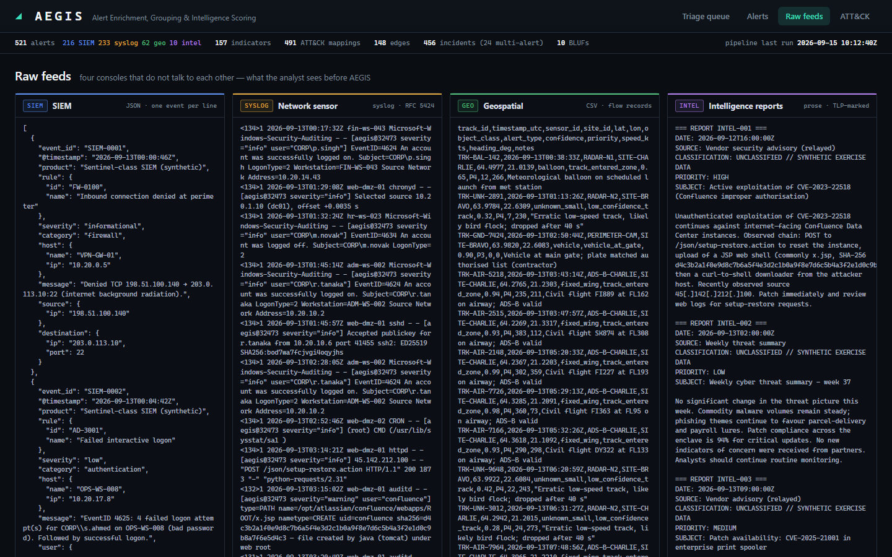
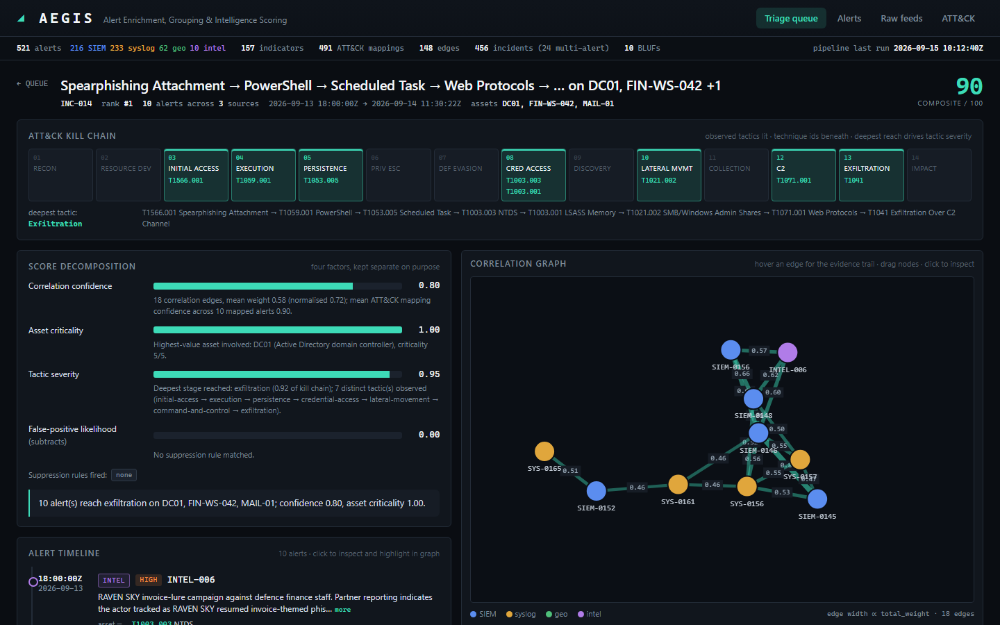
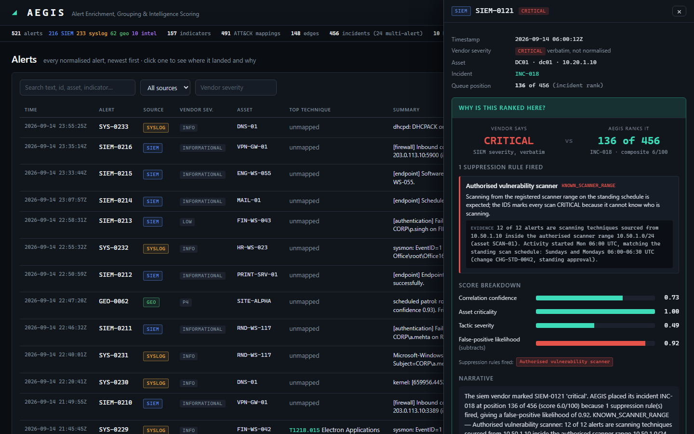

Threat-intelligence correlation and alert prioritisation, with an evidence trail IBM Bob can be asked about.
Team Blue Vector · Track: AI
Het Khatusuriya (lead, cybersecurity) · Manan Modi (AI/ML) · Mohammad Safik (frontend) · Samarth Bhalala (backend & data)
Thousands of alerts a day across SIEM, network sensors, geospatial feeds and written intelligence. Nobody reads them all, so triage is "whatever sorts to the top".
The SIEM says critical, the sensor says err, the geo feed says P2, the report says HIGH. None knows the asset or what else is happening.
A false positive costs an analyst-hour. A missed intrusion costs the mission. Real intrusions arrive as three unremarkable alerts in three consoles.

What the analyst actually starts the shift with.
Ingest adapters → SQLite (stdlib) → ATT&CK mapper (numpy TF-IDF over the pinned STIX corpus, 697 techniques) → correlation engine (NetworkX) → prioritiser → BLUF generator (template; watsonx.ai Granite refinement validated against evidence)
The console and IBM Bob read the same SQLite through the same functions. Neither computes anything, so they cannot disagree.
Force-directed correlation graph on canvas, evidence on edge hover, kill-chain strip, score decomposition, BLUF panel, "why is this ranked here?"

INC-014: phishing → PowerShell → C2 → DC01 credential theft → exfiltration. 10 alerts, 3 sources, 18 evidential edges.

Position 136 of 456. Rule KNOWN_SCANNER_RANGE: 12 of 12 alerts are scanning techniques from 10.50.1.10 inside the authorised scanner range, Monday 06:00 UTC, matching the standing schedule. Correlation confidence 0.73, asset criticality 1.00 — and a false-positive likelihood of 0.92.
A different source address, a different account, activity outside the window, or any technique beyond scanning. The rule is narrow on purpose.
The same answer is what IBM Bob gives via why_deprioritised. It exists only because every edge and every score kept its evidence.
| Tool | The analyst asks |
|---|---|
| get_priority_queue | "What should I look at first this shift?" |
| explain_correlation | "Why are SIEM-0146 and SYS-0161 the same incident?" |
| get_bluf | "Give me the BLUF for INC-017." |
| why_deprioritised | "Why is critical alert SIEM-0121 ranked so low?" |
| search_by_technique | "Show me everything mapped to T1059." |
| get_incident | "Walk me through INC-014." |
Bob was used throughout the build: planning the module contracts, implementing the adapters and correlation signals, reviewing the tactic matrix, and driving the terminal for the pipeline runs.
Rewrites the BLUF narrative from the structured evidence under a strict JSON schema. Hallucinated alert IDs are rejected; the template path is what the demo runs on.
the analyst loses their primary conversational interface into the evidence trail — not a summary paragraph.
521 synthetic alerts · 8 planted scenarios (6 intrusions, 2 look-alike benign) · 466 noise · python -m src.eval.evaluate
| Scenario | Truth | Coverage | Purity | Queue position | Suppression |
|---|---|---|---|---|---|
| Invoice phishing → PowerShell → C2 → DC01 NTDS → exfiltration | intrusion | 1.00 | 1.00 | 1 | – |
| UAS + RF emitter → rogue AP → OT VLAN → PLC write (SITE-ALPHA) | intrusion | 0.86 | 1.00 | 2 | – |
| VPN password spray → account takeover → AD/share enumeration | intrusion | 1.00 | 1.00 | 3 | – |
| CVE-2023-22518 → web shell → cron → reverse shell | intrusion | 1.00 | 1.00 | 4 | – |
| Shadow-copy deletion → masquerading → mass encryption | intrusion | 1.00 | 1.00 | 5 | – |
| Insider staging → personal cloud upload (ambiguous) | intrusion | 1.00 | 1.00 | 6 | – |
| Sysadmin rollout inside change window | benign | 0.75 | 1.00 | 117 | MAINTENANCE_WINDOWADMIN_FROM_ADMIN_WORKSTATION |
| Authorised scan, 8 vendor-CRITICAL alerts | benign | 1.00 | 1.00 | 136 | KNOWN_SCANNER_RANGE |
Honest misses: a HUMINT report with no technical indicator and one geo track linked only by time and place — the cost of refusing to chain on timing alone. Corpus is synthetic; thresholds are tuned to it.
| Member | Built |
|---|---|
| Het Khatusuriya (lead) | Corpus & ground truth, IOC extraction, tactic ordering matrix, suppression rules, asset inventory |
| Manan Modi | ATT&CK mapping, correlation graph & signal weights, BLUF generation, evaluation harness |
| Mohammad Safik | Analyst console: queue, correlation graph, kill-chain view, BLUF panel, screenshots |
| Samarth Bhalala | Canonical schema, four ingest adapters, SQLite store, FastAPI, MCP server for Bob |
github.com/het-khatusuriya/bob-ai-hackathon-blue-vector
python scripts/demo.py → http://localhost:8000